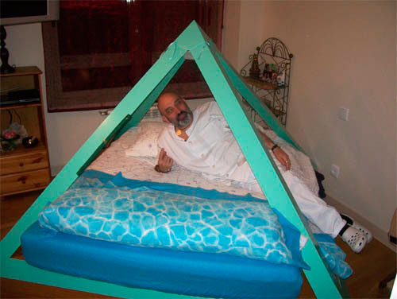

El terapeuta holístico Alfredo Martín de Rueda brinda servicio de terapia en Madrid.
Alfredo Martín de Ruedas
ENERGÍA Y SALUD
Kinesiología - Osteopatía - Flores de Bach - Acupuntura - Digitopuntura - Auriculopuntura - Reiki - Nutrición - Masaje Terapéutico - Oligoterapia - Cromoterapia - Reflexología podal - Rendimiento Deportivo - Regeneración de células madre
CENTROS DE ATENCIÓN
C/ Embajadores, nº 292 28045 (Madrid)
Centro de Terapias Om - Kumara C/ Colón, nº 17 Alcorcón (Madrid)
Avda. de Buenos Aires, nº 3 Los Molinos de Guadarrama (Madrid)
KINESIOLOGÍA HOLISTICA
* La kinesiología es una disciplina terapéutica que se basa en las respuestas subconscientes del cuerpo, para determinar infindad de estados, tolerancias e intolerancias, facilitando rápidamente diagnósticos diversos. Quita bloqueos en el cuerpo para que él se vaya regulando y sanando.
* El organismo cuando recibe estímulos externos, si son negativos, se adapta a ellos, colocándolos en principio en músculos, lo cual es perjudicial y de daño gradual. Cuantas más adaptaciones tiene que soportar, le hace falta energía en mayor disponibilidad para soportarlas, con lo cual menos energía queda en el resto del organismo.
* Cuando tiene todos los músculos saturados, las adaptaciones las hará donde pueda, vísceras, órganos, etc., y ahí ya cambia la cosa, se desarrollan enfermedades más peligrosas.
* Las adaptaciones que tiene que hacer el cuerpo pueden ser por estímulos de muchos tipos, Físicos, Químicos, Emocionales, Energéticos, etc., todas van relacionadas, todo afecta a todo.
* Lo idóneo es ir quitando adaptaciones, para que cuando el cuerpo tenga que soportar otros estímulos negativos nuevos y necesite adaptarse a ellos, tenga dónde acoplarlos, que perjudiquen lo menos posible y eso sólo sucederá si no está saturado de adaptaciones, para poder seguir adaptándose a los nuevos bloqueos de forma que no sea muy peligroso. Lo ideal es quitar todos los bloqueos, generando un alto nivel de potencia vital, con lo que el cuerpo tendrá siempre un excedente energético a su disposición. Un ejemplo es el siguiente: Goteras en el tejado, varios cubos para recoger el agua, ir vaciándolos antes de que se llenen y el agua caiga al piso inundándo todo. Teniendo muy en cuenta que los cubos son provisionales, lo que hay que hacer es cambiar las tejas.
Este ejemplo que pongo en las conferencias me gusta mucho:
Imaginemos que cuando nacemos nos dan un saco de arpillera y lo llevamos siempre en la espalda, y lo vamos llenando con las adaptaciones que nos va premiando la vida, sólo por el hecho de vivir y las que vamos adquiriendo voluntariamente por malos hábitos de todo tipo como alimentación poco correcta, falta de ejercicio, etc., como se van acumulando día a día, no las notamos pero ahí están, siempre en nuestras espaldas, son como piedras, si de alguna manera vamos vaciando el saco tendremos más energía para todo, y además nuestro sistema inmunitario podrá luchar en mejores condiciones contra las agresiones externas y las enfermedades, y esto se consigue con la kinesiología.
* "Muchas terapias solucionan el síntoma, o más bien lo tapan, lo interesante es solucionar el origen del problema.
* Productos alergénicos, algunos muy comunes, otros casi genéticos, y la inmensa mayoría por saturación, es lógico, siempre tendemos a comer lo que más nos gusta.
* Productos (no alimentos, porque no alimentan), que nos meten por los ojos, la sociedad, las empresas y el marketing, y que son perjudiciales, por no hablar de los transgénicos, y la permisibilidad para que no nos den información real de si son o no manipulados genéticamente.
* Problemas de absorción por parte del organismo de ciertos nutrientes, vitaminas, minerales, etc. Hay que ver por qué no se absorben ciertos nutrientes, no ir metiendo más que no se absorban, y que en la mayoría de los casos, como el hierro crean otros problemas.
Ejemplos de alimentos inusuales con gran aporte de hierro y calcio.
Algas Hijiki, 14 veces más calcio que la leche.
Algas Nori, 10 veces más hierro que las sardinas.
* Ir en contra de la naturaleza tiene consecuencias, correctores dentales, operaciones estéticas, tatuajes, piercing, etc., crean muchas adaptaciones muy perjudiciales para el organismo.
* Desviamos cauces de ríos para hacer campings, urbanizaciones, etc., ya sabemos cuáles son los resultados, antes o después, la naturaleza no tiene prisa, tiene todo el tiempo del mundo para volver a sus ritmos originales.
* Cicatrices, Geopatías; crean bloqueos muy importantes que consumen energía constantemente en el organismo.
* Válvula ileocecal, es la interviene en la asimilación de los nutrientes, sí tarda más de lo debido en cerrarse, el organismo no podrá absorber los nutrientes de los alimentos que ingerimos, que por otra parte ya están bastante deteriorados a nivel de aportes necesarios para la salud, de vitaminas, minerales, etc., en algunos casos los aportes han disminuido hasta llegar a ser un 80 % menos de los que tenían hace años, de ahí la importancia de utilizar suplementos nutricionales.
El problema es más importante cuando la mencionada válvula se cierra, pero no se abre cuando debe, lo cual ocasiona que los alimentos se descompongan y produzcan daños al organismo de tal calibre que pueden llegar a influir en la enfermedad de "crohn", favoreciendo su desarrollo, o que se acelere el proceso, etc. e indirectamente en toda la salud del organismo. De ahí la importancia de regularla.
* La kinesiología resuelve problemas que hoy en día por desgracia la medicina tradicional no puede solucionar, y con ella como complemento a la medicina convencional al aumentar notablemente la efectividad, se evitan enfermedades que hoy en día ni siquiera están contempladas como tales, y que sin embargo pueden degenerar posteriormente en graves enfermedades.
* Con los test musculares, haciéndolos al principio y al final de la consulta de kinesiología, la persona experimenta una notable diferencia de flexibilidad, lo que a la vez produce un aumento de salud y recuperación del organismo a todos los niveles, tanto de salud como de energía, y en caso de deportistas aumento del rendimiento deportivo. La kinesiología para aumentar la salud en el cuerpo funciona como un G.P.S., indica al terapeuta en qué dirección tiene que ir en la búsqueda de la terapia adecuada para solucionar los problemas de la persona. La fuerza sin control no sólo no sirve, "sino" que puede ser perjudicial.
Ejemplo: Si el problema, o el bloqueo, o la lesión, como queramos llamarle es un problema:
- Físico, se trabaja con osteopatía (músculos, fascias, ligamentos, articulaciones y tendones).
- Químico, si tiene carencias aportando al cuerpo lo que necesite, minerales, vitaminas, oligoelementos, (nutrientes), si tiene excesos de algún alimento, se ven con el test de homeopatía electrónico, o coloquialmente llamado "Test de intolerancia de alimentos", retirando de la dieta los que perjudiquen, de esta forma el cuerpo se regula y aumenta su salud y energía.
- Emocional, se trata con flores de Bach.
- Energético, se utiliza la acupuntura.
Si solucionamos un problema que es prioritario, se soluciona para siempre y hace que otros problemas secundarios desaparezcan, sin embargo si el problema que quitas no es prioritario, en un corto espacio de tiempo el problema prioritario hará que el que hemos quitado vuelva a aparecer. Por poner un ejemplo: Si tenemos una rueda de un coche que se ha quedado sin aire, lo más fácil y rápido aparentemente es inflarla, tardaremos 1 minuto, y dependiendo del problema prioritario puede que tarde en volver a perder el aire unas horas, unos días, unas semanas, o incluso en el mejor de los casos unos meses, pero seguro que vuelve a perder el aire, dependiendo de la causa, se podrá arreglar con un parche, sustituyendo la cámara, sustituyendo la válvula o cambiando la cubierta, el problema se solucionará definitivamente, esto es lo que hace la Kinesiología.
Contacto
Información recopilada y adaptada desde fichas históricas de Piramicasa para conservar los datos en la web nueva.
Fuente original de referencia: https://www.piramicasa.es/es/terapeuta-madrid-alfredo-martin.html